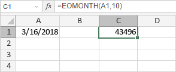

EOMONTH funkcija
EOMONTH funkcija je jedna od funkcija za datum i vreme. Koristi se za vraćanje serijskog broja poslednjeg dana meseca koji dolazi određen broj meseci pre ili posle zadatog početnog datuma.
Sintaksa
EOMONTH(start_date, months)
EOMONTH funkcija ima sledeće argumente:
| Argument | Opis |
|---|---|
| start_date | Broj koji predstavlja prvi datum perioda unet korišćenjem DATE funkcije ili druge funkcije za datum i vreme. |
| months | Broj meseci pre ili posle start_date. Ako months ima negativan predznak, funkcija vraća serijski broj datuma pre zadatog start_date. Ako months ima pozitivan predznak, funkcija vraća serijski broj datuma koji dolazi posle zadatog start_date. |
Napomene
Kako primeniti EOMONTH funkciju.
Primeri
Slika ispod prikazuje rezultat koji vraća EOMONTH funkcija.
